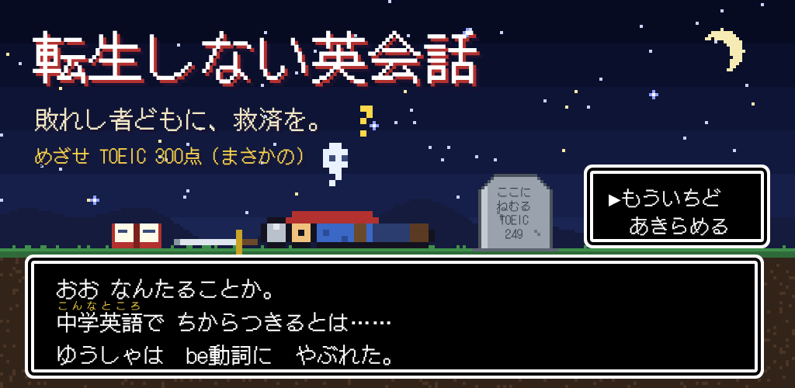

転生しない英会話
王道展開が、必ず現実に着地する。笑って話せる英会話ドリルです。全話無料・広告なし・アプリ内課金なし。

転生しない英会話（ネタ版）
まぶしい光、見慣れない天井、謎の美女からの呼び出し――のはずが、着いた先は区役所の窓口やバイトの面接。TOEIC 250〜410 相当の8レベル × 各10話（全80話）。
各話の流れ
- ゆっくり通し聞き（先のセリフは伏せてあります）
- 音つなぎ道場：computer→コンピューラー、Did you→ディジュ など、音のつながりを先に練習
- 交互に読む：スマホの音声認識で発音を判定
- カリフォルニア口語で通し聞き
- 口語で交互に読む
データの扱い
- マイクの音声は、発音判定のために端末の音声認識に渡すだけで、アプリは録音・保存・送信しません。
- 学習記録は端末の中だけに保存します。
- 広告や解析のツールは入っていません。
TOEIC is a registered trademark of ETS. This product is not endorsed or approved by ETS. アプリ内の「TOEIC ○○点」はネタとしての難易度表示です。登場する人物・団体・出来事はすべて架空です。